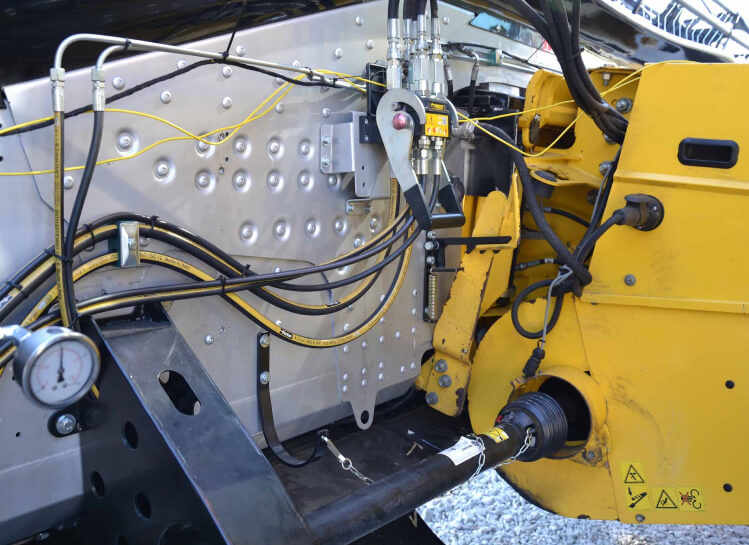
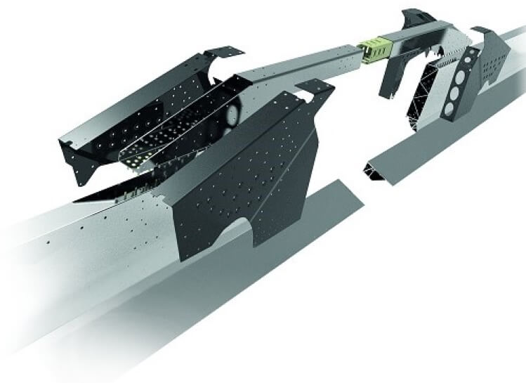
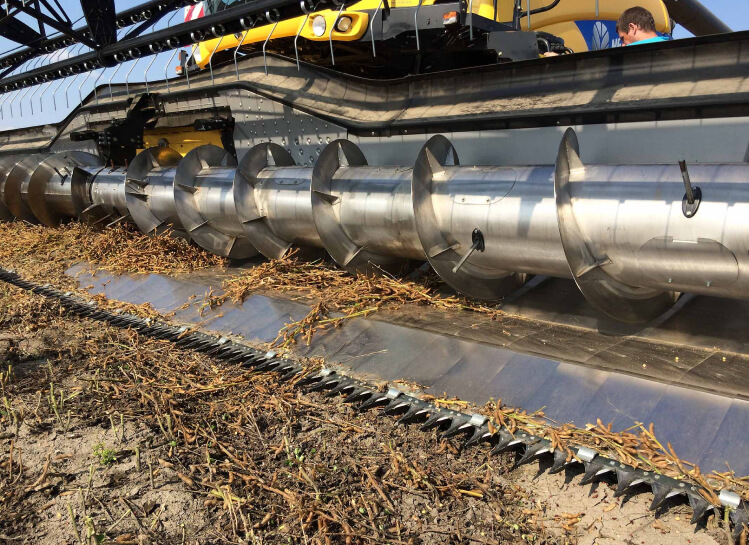

BISO ULTRALIGHT UL1230 на комбайне CR9090 SmartTrax. Долгий срок службы связан с прочной гибридной рамкой (фото из филиала BISO HURBANOVO, Словакия).
Уже при рабочей ширине 8,5-9,0 м стальная рама пружинит настолько, что страдает долговечность подшипников шнека и всех компонентов привода. Для гибридных рам, которые комбинируют алюминий и сталь, сжатие минимально, и клиент оценит их преимущества только после нескольких лет работы. Но на жатках с шириной 12 и более метров преимущества этой технологии можно увидеть сразу же. Мы впервые использовали эту технологию на жатках Ultralight, и по прошествии нескольких лет наши клиенты отметили реальную прибыль от этой технологии. Чрезвычайно прочная рама HYBRID также является основной предпосылкой для хорошо работающей системы VARIO с расширением в 800 мм и способностью скользить косилкой почти под самым шнеком. На практике это означает, что мы можем сократить расстояние от косилки до шнека всего до 170 мм. Это очень важно при уборке таких коротких культур как, например, ячмень.

Дизайн средней части гибридной рамы на жатке 3D класса VarioFlex AIR i (фото сделано во время испытаний в 2018 году).
Путь к гибридной раме был долгим и тернистым, и начался уже в 2007 году.
На выставке Agritechnica 2007 в Ганновере мы представили жатку BISO VX1200 CropRanger PremiumPlus с шириной захвата 12 м — она имела стальную раму и модуль FLEX. Из-за большого веса жатка была оборудована опорными колесами с пневмоподвеской. Это означает, что комбайн скорее двигал жатку вперед, чем держал её на весу. Мы называем это решение Ultralight 1-го поколения, и первый опыт с ним показал нам, что это неправильный путь. Уже в 2009 на той же выставке Agritechnica компания BISO получила серебряную медаль за первую жатку из алюминия из модельного ряда UltraLight 800. Эта жатка имела полностью алюминиевую раму, включая боковые стенки приводных линий. Интересной особенностью этой жатки стала секционная рама, собранная из отдельных модулей. Основным преимуществом такой конструкции должна была стать простота ремонта в случае повреждения какой-либо части жатки во время работы. Предлагаемая рабочая ширина - 770, 870, 990, 1050, 1200, 1290, 1420 - также основана на сочетании ширины модулей. В 2011 году структура моделей была немного обновлена. Изменения затронули небольшие модели 770, 870 и 990, но более крупные версии 1070, 1200, 1290, 1410 были переработаны.
Agritechnica 2007 - пневматическая подвеска полностью интегрированных опорных колес на 12-метровой опоре со стальной рамой. Комбайн не держит жатку на весу, а «толкает» её собственным весом. Эту же жатку мы представляли на выставке Techagro 2008 в Брно, Чехия.
Agritechnica 2007 - первая попытка работы с 12-метровой жаткой CropRanger VX1200 Premium Plus, которую мы оснастили модулем FLEX.
На фотографии та же самая жатка и уникальные интегрированные шасси. Также интерес представляет центральный привод несимметричного разделенного шнека и барабана. Стальная рама была пределом для этой конструкции, и мы отказались от этого решения по многим различным причинам.
В конце 2012 года началось производство Ultralight 3-го поколения с совершенно новой рамой из алюминиевых профилей в сочетании со стальными деталями (например, средняя секция консоли комбайнового питателя), и именно благодаря сочетанию алюминиевых и стальных деталей эта новая рама получила название HYBRID FRAME. В прайс-листе 2013 года появилось три модели - 1070, 1220 и 1410. В 2013 году эта модель Ultralight третьего поколения была показана на выставке Agritechnica в Ганновере и получила название NEW ULTRALIGHT. Большинство выпускаемых жаток имеют алюминиевые боковые стенки (привод обычно находится с обеих сторон), что стало результатом чрезвычайных усилий по экономии каждого килограмма веса. Основным рынком для этой категории жаток всегда была Германия, где большинство из них работает и сегодня. Модели Ultralight 2-го и 3-го поколения работают в Великобритании, Австралии и в Канаде. С этой точки зрения важными рынками также являются Чехия и Словакия. Клиенты, которые работают с этими жатками в течение 5-ти и более лет, ценят прочную раму и длительный срок службы всех компонентов. Уже во втором поколении модели Ultralight имели чрезвычайно прочную раму, но благодаря гибридной раме 3-е поколение приобрело исключительную прочность по сравнению с конкурентами, и благодаря этому другие компоненты также получили значительно более длительный срок службы всех подшипников и минимальную нагрузку на шнек.
Интересный дизайн гибридной рамки на ULTRALIGHT UL1070, оснащенной модулем FLEX 1-го поколения, уже в 2014 году (фото с заводских испытаний в Словакии).
Испытание рамы во время тестирования первых версий 3D VarioFlex. Система центрального подшипника шнека и расположение приводов принципиально не меняются. (BISO Hurbanovo, Slovensko 2017).
К предстоящему сезону 2014 года две модели Ultralight 1070 и 1230 были готовы к производству уже в комбинации с прицепом ProfiSteer с управляемым задним мостом (для жаток с шириной захвата более 12 м это просто необходимо). В сезоне 2015 года мы расширили наше предложение благодаря моделям 770 и 920 с односторонним приводом, а 1070 и 1230 остались без изменений. Приятно отметить, что Ultralight 920 обычно выпускался с двухсторонними приводами по причинам объединения производства. Это решение стало весьма популярным среди клиентов, работающих с шириной захвата 9,2 (каждая коробка передач имеет косы длиной всего 4,6 м). Водители хвалят это нововведение, несмотря на то что утренняя проверка технического обслуживания теперь должна проводиться с обеих сторон.

Схема гибридной рамы - результат более 10 лет интенсивных испытаний. Сейчас мы работаем над третьим поколением. Рамы рассчитаны на жатки с шириной 18м.
В итоге, конструкция секционной рамы не принесла сервисного преимущества.
Когда мы поняли, что единственным правильным решением будет использование алюминиевых сплавов, сразу же возник вопрос: как будет происходить обслуживание таких жаток на местах? Как мы будем чинить повреждение рамы? Здесь и возникла идея использовать секции — сломанную часть можно было бы легко снять и заменить, без необходимости проводить большой ремонт. В большинстве случаев клиент доставляет жатку на завод BISO, где мы можем гораздо быстрее и эффективнее разобрать все детали и отремонтировать раму на профессиональном уровне. На фабрике мы можем отремонтировать любой вид повреждения рамы, однако часто случалось так, что производство новой рамы было гораздо дешевле, чем ремонт старой. Поэтому при больших повреждениях рамы с шириной более 9-ти метров клиенты обычно меняют жатку на новую. И исходя из этих фактов, использование рам класса HYBRID больше не является проблемой после многолетнего опыта.
Тесты средней секции (места, где левая и правая косы перекрывают друг друга), как правило, очень важны, если активирован модуль FLEX. На снимке хорошо видна средняя консоль шнека, которая зарекомендовала себя во всех культурах во время испытаний. На картинке вы можете увидеть жатку 3D VarioFlex 1070 AIR i (Комарно, Словакия, 2017).
Мы провели испытания на наших гибридных рамах, и выяснили, что в случае, если жатка сталкивается с препятствием сбоку, рама обычно не повреждается, вместо этого повреждается транспортер наклонной камеры комбайна.

Модуль FLEX, который мы тестировали в 2017 году при уборке сои, с двойными пальцами BISO и ножами, включая привод BISO.
Новые дизайнерские решения с модельным рядом ULTRALIGHT 800
Иногда название модели ULTRALIGHT 800 немного сбивает с толку, потому что число 800 означает не рабочую ширину жатки, а непревзойденное расширение vario на целых 80 см. В этой модельной линейке впервые использовался не только алюминиевый сплав, но и ряд других успешных конструктивных особенностей. Склеивание швов, центральное крепление непрерывного шнека, привод косилки и шнека с обеих сторон, разделенная катушка и экстремальное расширение систем Vario не только вперед, но и назад к шнеку. И уже упоминавшийся прицеп ProfiSteer с управляемым задним мостом (4-х рулевое управление).
Жесткая рама необходима для простой и точной регулировки шнека и для обеспечения плавного потока собираемого материала в комбайн. Особенно чувствительны к этому высокопроизводительные роторные комбайны.
3D VarioFlex - гибридная рама с параллелограммом и модулем FLEX
В новых жатках класса 3D VARIOFLEX AIR i используются гибридные рамы, испытанные целым поколением модельного ряда Ultralight 3-го поколения. Но исследования и разработки продолжаются, и мы оснастили эту раму модулем FLEX с параллелограммом. Ситуация на рынке также немного изменилась за это время. На самом деле, жатка с рабочей шириной около 10,7 м уже давно является стандартом в сегменте больших комбайнов, а рабочая ширина в 12 м уже никого не удивляет.
Модуль FLEX полностью опущен до самого нижнего положения.
Некоторые соевые культуры могут быть серьезной проблемой для жатки и комбайна.
Гусеничное шасси комбайна работает превосходно. На картинке хорошо видна система VARIO, расположенная под рамой —один из ключевых патентов компании BISO, используемый с 2001 года.
Во время уборки основного урожая статистически подсчитано что комбайн в среднем работает 22 дня безостановочно. Это одновременно создает огромное давление на экипаж и на владельца. С профессиональной жаткой наши клиенты могут достичь ежедневной выработки более 100 га с помощью таких комбайнов, как New Holland CR9090SL SmartTrax. Для таких клиентов гибридная рама является обязательным условием для длительного срока службы всех компонентов заголовка.